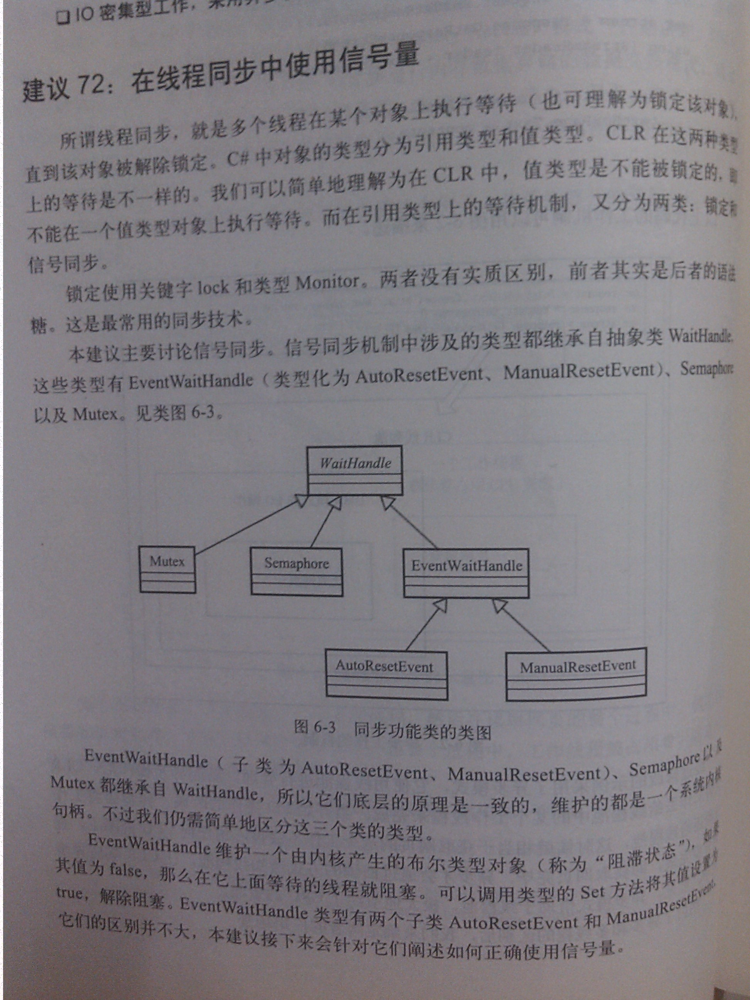

代码:
public partial class Form1 : Form
{
public Form1()
{
InitializeComponent();
}
AutoResetEvent autoResetEvent = new AutoResetEvent(false);
delegate void setlabel(string s);
private void button1_Click(object sender, EventArgs e)
{
Thread tWork = new Thread(() =>
{
setLabelValue(label1, "线程 开始了..." + Environment.NewLine);
setLabelValue(label1,"开始做实际的事情: " + Environment.NewLine);
//
setLabelValue(label1,"等待信号,否则罢工..." + Environment.NewLine);
autoResetEvent.WaitOne();
setLabelValue(label1,"钱到账,活就干完了");
});
tWork.IsBackground = true;
tWork.Start();
}
private void setLabelValue(Control ct,string arg)
{
if (ct.InvokeRequired)
{
ct.Invoke(new Action(() =>
{
ct.Text += arg;
}));
}
else
{
ct.Text += arg;
}
}
private void button2_Click(object sender, EventArgs e)
{
autoResetEvent.Set();
}
}
线程同步中使用信号量。
